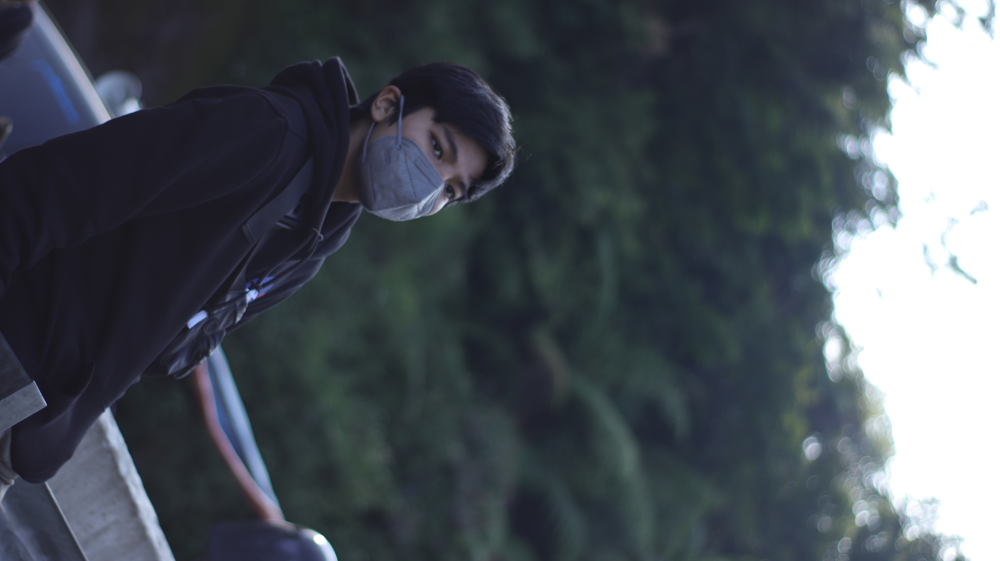

Hey Guys! I am Reza Mohtashami from InteriorD
Architect Reza Mohtashami has designed a conceptual Black Villa in Harriman State Park, New York. The single-family home was announced through a series of architectural renderings that depict the interior and exterior of the villa. When asked about his design process on the project, Mohtashami explained that the dark palette was an important concept. “Black is very vague,” he says. “Black means power and has a high character and prestige. It is very mysterious.” Mohtashami believes that though lighter colors and open spaces are more popular in modern trends, the moody atmosphere of this home fits better in the context of the New York forest.
Introduce Our Team!

Haidar Hanif
I am an introvert is often thought of as a quiet, reserved, and thoughtful individual. I don't seek out special attention or social engagements, as these events can leave introverts feeling exhausted and drained.
Haidar Hanif
I am an introvert is often thought of as a quiet, reserved, and thoughtful individual. I don't seek out special attention or social engagements, as these events can leave introverts feeling exhausted and drained.
Haidar Hanif
I am an introvert is often thought of as a quiet, reserved, and thoughtful individual. I don't seek out special attention or social engagements, as these events can leave introverts feeling exhausted and drained.